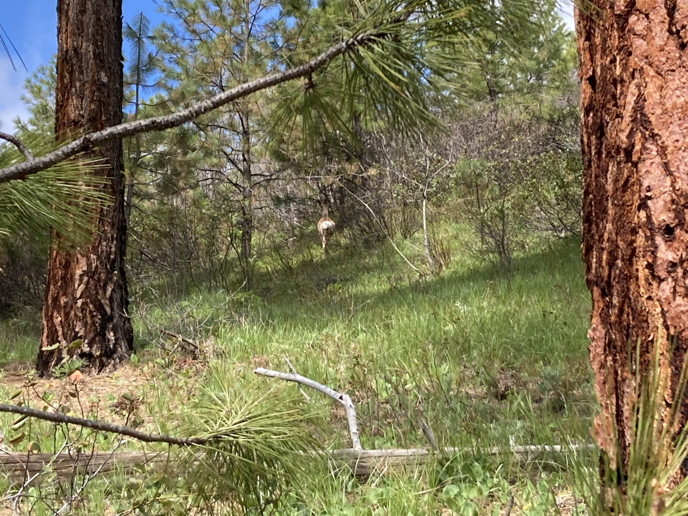
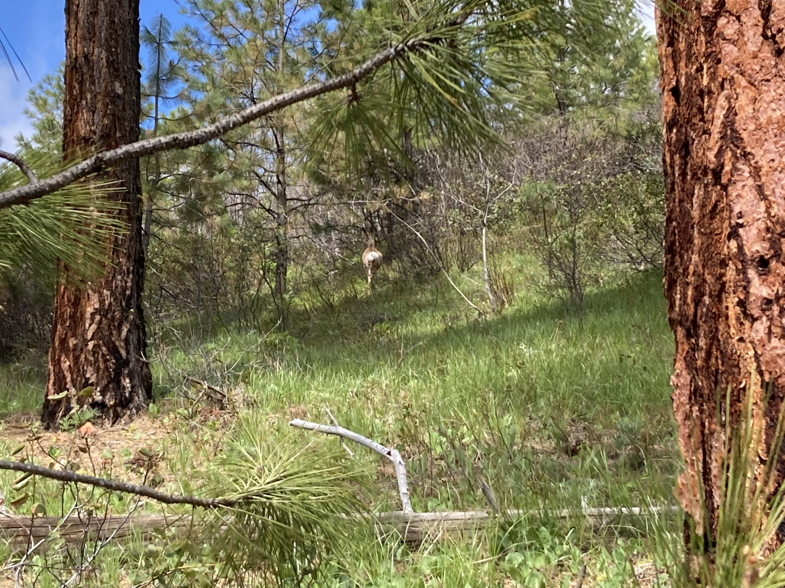

Log
This is a log and forever changing example of my progress through web design and programming
Recent Hikes
Silver Falls
Made a trip to Silver Falls in Entiat on June 26.
 Not very busy and the weather was great, it's about 30 miles up the Entiat River.
Not very busy and the weather was great, it's about 30 miles up the Entiat River.
Canyon Crest
Canyon Crest is a nice little trail just outside of Leavenworth.
 We saw a bear right before the parking spot but wasn't quick enough to get a photo as our car scared it away. Accidently snuck up on a few deer too.

We saw a bear right before the parking spot but wasn't quick enough to get a photo as our car scared it away. Accidently snuck up on a few deer too.
